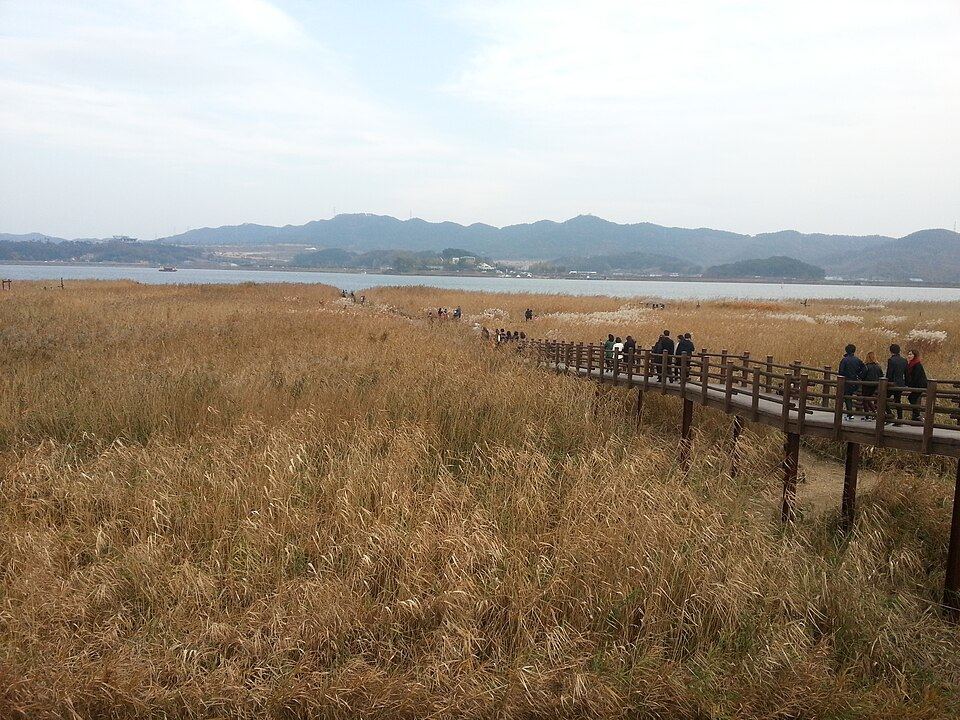
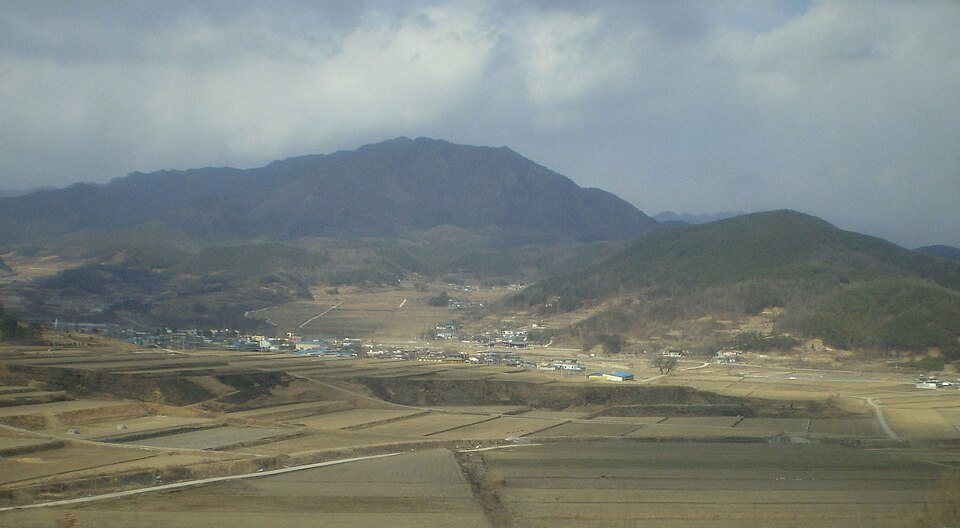

FEATURED
시험일정
2026 검정고시 시험일정·원서접수 총정리 (1회·2회)
제1회 시험 4월 4일, 제2회 시험 8월 11일. 원서접수 기간과 준비물, 합격 기준(평균 60점)까지 한눈에 정리했습니다.
2026.07.29

지역·대상별
김포 검정고시 — 40·50대에 다시 시작하는 만학도 과외
"이 나이에 될까" 걱정부터 기초 다지기·유연한 시간표까지 + 2027 대비.
2026.09.09

지역·대상별
서천 검정고시 — 자녀를 돕는 학부모를 위한 안내
응시자격 확인·공부 환경·진로 상담 동행까지, 부모가 돕는 법 + 2027 대비.
2026.09.09

지역·학습팁
거창 검정고시 — 시간 없을 때 단기 합격 전략
과목 합격제 활용·선택과 집중·기출 중심으로 짧은 기간 합격 + 2027 대비.
2026.09.09

지역·대상별
이천 검정고시 — 직장 다니며 준비하는 성인 맞춤 과외
퇴근 후·주말 시간표, 화상·방문 수업으로 일하며 합격까지 + 2027 대비.
2026.09.08

지역·대상별
밀양 검정고시 — 학교를 그만둔 뒤, 다시 시작하는 법
자퇴 후 응시자격·리듬 회복·대학 진로 로드맵까지 1:1로 + 2027 대비.
2026.09.08

지역·시험정보
보령 검정고시 — 고졸 검정고시로 대학까지 가는 로드맵
수시·정시 활용, 목표 점수, 재응시 전략까지 대입 로드맵 + 2027 대비.
2026.09.08

지역·학습팁
오산 검정고시 중졸·고졸 영어·수학 기초 잡고 합격까지
원동·궐동·세교 등 오산, 영어·수학을 기초부터 순서대로 + 2027 일정.
2026.09.07

지역·학습팁
사천 검정고시 국어·한국사 핵심 흐름 완성
벌용·동서·향촌 등 사천, 국어·한국사를 흐름 중심으로 + 2027 일정.
2026.09.07

지역·학습팁
서귀포 검정고시 고졸 수학·과학 60점 개념 완성반
동홍·서홍·중문 등 서귀포, 수학·과학을 기본 개념으로 60점 + 2027 일정.
2026.09.07

지역·학습팁
상주 검정고시 국어·영어 단계별 실력 코스
남성·계림·동문 등 상주, 국어·영어를 단계별로 차근차근 + 2027 일정.
2026.09.07

지역·학습팁
김제 검정고시 사회·한국사 이해로 끝내는 정리
요촌·신풍·검산 등 김제, 사회·한국사를 이해·연결 중심으로 + 2027 일정.
2026.09.07

지역·학습팁
부천 검정고시 중졸·고졸 영어·수학 기초부터 합격까지
중동·상동·송내·역곡 등 부천, 영어·수학을 순서대로 기초부터 + 2027 일정.
2026.09.04
학습팁
검정고시 합격률 높이는 방법 — 중졸·고졸 전과목 1:1 과외
평균 60점 합격 기준·과목합격제·기출 3회독. 국어·영어·수학·사회·과학·한국사 득점 전략.
2026.09.03
지역·학습팁
인천 검정고시 중졸·고졸 영어과외 준비방법 — 전과목 대비
영어 단계별 준비법 + 합격을 좌우하는 전과목(국·영·수·사·과·한국사)까지 1:1 대비. 2027 대비.
2026.09.02
지역·학습팁
광명 검정고시 중졸·고졸 영어·수학 속성 기초반
철산·하안·소하 등 광명, 영어·수학을 빠르고 정확하게 기초부터 + 2027 일정.
2026.09.02
지역·학습팁
거제 검정고시 국어·한국사 합격점 만들기
고현·옥포·장승포 등 거제, 국어·한국사를 흐름 중심으로 합격점 + 2027 일정.
2026.09.02
지역·학습팁
논산 검정고시 고졸 수학·과학 개념 다지기 60점
취암·부창·화지 등 논산, 수학·과학을 기본 개념 다지기로 60점 + 2027 일정.
2026.09.02
지역·학습팁
영주 검정고시 국어·영어 실력 완성 코스
휴천·가흥·영주 등 영주, 국어·영어를 내 수준 맞춤으로 실력 완성 + 2027 일정.
2026.09.02
지역·학습팁
남원 검정고시 사회·한국사 흐름 정리 특강
도통·향교·죽항 등 남원, 사회·한국사를 흐름 중심으로 정리 + 2027 일정.
2026.09.02
학습팁
2027년 4월 중졸·고졸 검정고시 준비 방법 — 전과목 1:1 관리
과외 선생님 입장에서 정리한 준비법. 영어·국어·수학 등 전과목을 1:1로 관리.
2026.08.31
지역·학습팁
파주 검정고시 중졸·고졸 영어·수학 탄탄 기초 완성
운정·금촌·교하 등 파주, 영어·수학을 기초부터 탄탄히 + 2027 일정.
2026.08.31
지역·학습팁
통영 검정고시 국어·한국사 흐름으로 잡는 합격점
무전·북신·정량 등 통영, 국어·한국사를 흐름 중심으로 + 2027 일정.
2026.08.31
지역·학습팁
당진 검정고시 고졸 수학·과학 개념 정복 60점
읍내·수청·채운 등 당진, 수학·과학을 기본 개념 정복으로 60점 + 2027 일정.
2026.08.31
지역·학습팁
김천 검정고시 국어·영어 실력 UP 맞춤 코스
평화·남산·양금 등 김천, 국어·영어를 내 수준 맞춤으로 실력 UP + 2027 일정.
2026.08.31
지역·학습팁
정읍 검정고시 사회·한국사 핵심 압축 정리
수성·연지·상동 등 정읍, 사회·한국사를 핵심 압축·흐름으로 + 2027 일정.
2026.08.31
학습팁
검정고시 국어, 어휘와 독해로 60점 넘기는 공부법
국어는 외우는 과목이 아니라 이해하는 과목. 어휘→독해→기출 순서로 안정적으로 점수를 만드는 법.
2026.08.30
시험정보
검정고시 선택과목, 어떤 걸 고를까
평균 60점 합격에 유리한 선택과목 고르는 기준과, 과목 선택 시 흔히 하는 실수를 정리했어요.
2026.08.30
지역·학습팁
시흥 검정고시 중졸·고졸 영어·수학 기초 다지기 로드맵
정왕·배곧·은행 등 시흥, 영어·수학을 순서대로 기초 다지기 + 2027 일정.
2026.08.28
지역·학습팁
양산 검정고시 국어·한국사 합격 필수 정리
물금·중부·삼성 등 양산, 국어·한국사를 흐름·빈출 중심으로 + 2027 일정.
2026.08.28
지역·학습팁
서산 검정고시 고졸 수학·과학 60점 공략 코스
동문·읍내·수석 등 서산, 수학·과학을 기본·빈출 개념으로 60점 + 2027 일정.
2026.08.28
지역·학습팁
안동 검정고시 국어·영어 차근차근 실력 쌓기
옥동·용상·태화 등 안동, 국어·영어를 기초부터 한 걸음씩 + 2027 일정.
2026.08.28
지역·학습팁
나주 검정고시 사회·한국사 핵심 개념 잡기
빛가람·송월·영산 등 나주, 사회·한국사를 핵심 개념·흐름으로 + 2027 일정.
2026.08.28
지역·학습팁
평택 검정고시 중졸·고졸 영어·수학 합격까지 최단 코스
비전·소사벌·안중 등 평택, 영어·수학을 필요한 것만 집중 + 2027 일정.
2026.08.27
지역·학습팁
진주 검정고시 국어·한국사 — 이해로 완성하는 합격
신안·평거·초전 등 진주, 국어·한국사를 이해·흐름 중심으로 + 2027 일정.
2026.08.27
지역·학습팁
광양 검정고시 고졸 수학·과학 기초 개념 마스터
중마·마동·광영 등 광양, 수학·과학을 기초 개념부터 + 2027 일정.
2026.08.27
지역·학습팁
경산 검정고시 국어·영어 약점 보완 집중반
중방·옥산·정평 등 경산, 국어·영어 약점만 콕 집어 보완 + 2027 일정.
2026.08.27
지역·학습팁
춘천 검정고시 사회·한국사 흐름으로 끝내는 정리
후평·석사·퇴계 등 춘천, 사회·한국사를 흐름 중심으로 + 2027 일정.
2026.08.27
지역·학습팁
원주 검정고시 중졸·고졸 영어·수학 노베이스 완성 코스
단계·무실·명륜 등 원주, 영어·수학을 노베이스부터 순서대로 + 2027 일정.
2026.08.26
지역·학습팁
순천 검정고시 국어·한국사 — 핵심만 골라 합격
조례·연향·왕조 등 순천, 국어·한국사를 핵심·흐름 중심으로 + 2027 일정.
2026.08.26
지역·학습팁
안양 검정고시 고졸 수학·과학 — 60점 넘기는 개념 정리
평촌·범계·비산 등 안양, 수학·과학을 기본·빈출 개념 중심으로 + 2027 일정.
2026.08.26
지역·학습팁
세종 검정고시 국어·영어과외 점수 안정화 전략
도담·아름·종촌 등 세종, 국어·영어 점수 기복 줄이기 + 2027 일정.
2026.08.26
지역·학습팁
군산 검정고시 사회·한국사 — 암기 부담 줄이는 정리법
나운·수송·조촌 등 군산, 사회·한국사를 이해·연결 중심으로 + 2027 일정.
2026.08.26
지역·학습팁
용인 검정고시 중졸·고졸 영어·수학 단기 집중반
수지·기흥·처인 등 용인, 영어·수학을 먼저 집중해서 단기 합격 + 2027 일정.
2026.08.25
지역·학습팁
충주 검정고시 국어·사회 과외 — 이해로 잡는 점수 전략
연수·교현·칠금 등 충주, 국어·사회를 이해 중심으로 + 2027 일정.
2026.08.25
지역·학습팁
여수 검정고시 고졸 수학·과학 개념부터 실전까지
여서·문수·학동 등 여수, 수학·과학을 개념부터 기출 실전까지 + 2027 일정.
2026.08.25
지역·학습팁
경주 검정고시 국어·한국사 흐름으로 완성
황성·용강·동천 등 경주, 국어·한국사를 흐름 중심으로 + 2027 일정.
2026.08.25
지역·학습팁
익산 검정고시 영어·사회 기초 탈출 가이드
영등·부송·모현 등 익산, 영어·사회를 기초부터 순서대로 + 2027 일정.
2026.08.25
학습팁
검정고시 학원 vs 과외 차이점 — 과외가 좋은 이유
학원(그룹)과 과외(1:1)의 차이 비교표 + 과외가 유리한 이유 7가지.
2026.08.24
지역·학습팁
강릉 검정고시 중졸·고졸 영어·수학 완전 기초반
교동·포남·입암 등 강릉, 영어·수학을 완전 기초부터 순서대로 + 2027 일정.
2026.08.24
지역·학습팁
목포 검정고시 국어·한국사 과외 — 흐름 잡고 합격
하당·상동·옥암 등 목포, 국어·한국사를 흐름·빈출 중심으로 + 2027 일정.
2026.08.24
지역·학습팁
구미 검정고시 고졸 수학·과학 개념 잡기
송정·원평·인동 등 구미, 수학·과학을 개념·빈출 중심으로 + 2027 일정.
2026.08.24
지역·학습팁
남양주 검정고시 국어·영어과외 실전 대비
다산·별내·화도 등 남양주, 국어·영어를 기초 다지고 기출 실전 + 2027 일정.
2026.08.24
지역·학습팁
아산 검정고시 사회·한국사 핵심 총정리
배방·탕정·온양 등 아산, 사회·한국사를 흐름·빈출로 + 2027 일정.
2026.08.24
지역·학습팁
전주 검정고시 국어·한국사 과외 — 흐름으로 잡는 합격 전략
효자·서신·송천 등 전주, 국어·한국사를 흐름·빈출 중심으로 + 2027 일정.
2026.08.21
지역·학습팁
포항 검정고시 고졸 수학·과학과외 개념 완성
장량·양덕·이동 등 포항, 수학·과학을 개념·빈출 중심으로 + 2027 일정.
2026.08.21
지역·학습팁
김해 검정고시 중졸·고졸 영어·수학 기초 다지기
내외·삼계·장유 등 김해, 영어·수학을 기초부터 순서대로 + 2027 일정.
2026.08.21
지역·학습팁
의정부 검정고시 국어·영어과외 점수 끌어올리기
가능·신곡·민락 등 의정부, 국어·영어로 점수 상향 + 2027 일정.
2026.08.21
지역·학습팁
제주 검정고시 사회·한국사 과외 핵심 정리
노형·연동·이도 등 제주, 사회·한국사를 흐름·빈출로 + 2027 일정.
2026.08.21
지역·학습팁
송파 검정고시 중졸·고졸 공부 방법 — 무엇부터 시작할까
잠실·문정·가락 등 송파구, 중졸·고졸 과목 순서와 공부 시작법 + 2027 일정.
2026.08.18
지역·학습팁
천안 검정고시 중졸·고졸 합격 공부법 A to Z
불당·두정·성정 등 천안, 진단→순서→기출까지 합격 공부법 + 2027 일정.
2026.08.18
지역·학습팁
창원 검정고시 중졸·고졸 준비, 이렇게 공부하세요
상남·용호·중앙 등 창원, 준비 기간·과목 순서·공부법 + 2027 일정.
2026.08.18
시험정보
검정고시 원서접수 방법 — 절차·준비물·수수료 총정리
온라인·방문 접수 절차, 사진·신분증·서류 준비물, 응시 수수료와 주의사항까지.
2026.08.18
학습팁
검정고시 공부 슬럼프·멘탈 관리 — 끝까지 가는 법
슬럼프 신호와 원인, 목표 쪼개기·루틴·휴식으로 다시 페이스를 찾는 법.
2026.08.18
학습팁
검정고시 하루 공부 루틴 — 독학 시간관리·계획표
직장인·자퇴생·성인별 하루 루틴과 주간 계획표 짜는 현실적인 방법.
2026.08.18
지역·학습팁
해운대 검정고시 고졸 국어·사회과외 합격 로드맵
좌동·우동·중동 등 부산 해운대구, 국어·사회를 이해·정리 중심으로 + 2027 일정.
2026.08.18
지역·학습팁
대구 수성 검정고시 중졸·고졸 영어·수학 완전정복
범어·만촌·황금 등 대구 수성구, 영어·수학을 기초부터 1:1로 + 2027 일정.
2026.08.18
지역·학습팁
광주 검정고시 고졸 과학·한국사 집중 공략
상무·수완·첨단 등 광주, 과학·한국사를 개념·흐름 중심으로 + 2027 일정.
2026.08.18
지역·학습팁
일산 검정고시 고졸 영어·국어과외 점수 올리기
정발산·마두·주엽 등 고양 일산, 영어·국어로 점수 올리기 + 2027 일정.
2026.08.18
지역·학습팁
청주 검정고시 중졸·고졸 수학·사회 기초완성
성안·복대·용암 등 청주, 수학·사회를 기초부터 순서대로 + 2027 일정.
2026.08.18
지역·학습팁
강남 검정고시 고졸 국어·영어과외 준비 전략
역삼·대치·논현 등 강남구, 국어(어휘·독해)·영어를 1:1로 + 2027 일정.
2026.08.15
지역·학습팁
분당 검정고시 고졸 수학·과학과외 공략법
정자·서현·수내 등 성남 분당, 수학·과학을 개념·빈출 중심으로 + 2027 일정.
2026.08.15
지역·학습팁
수원 검정고시 사회·한국사 과외 완성 가이드
영통·권선·팔달 등 수원, 사회·한국사를 흐름·빈출로 잡기 + 2027 일정.
2026.08.15
지역·학습팁
부평 검정고시 중졸·고졸 영어·수학과외 준비법
부평·산곡·부개 등 인천 부평구, 영어·수학을 기초부터 1:1로 + 2027 일정.
2026.08.15
지역·학습팁
대전 검정고시 고졸 국어·수학·한국사 합격 전략
둔산·유성 등 대전, 국어·수학·한국사 세 과목 합격 전략 + 2027 일정.
2026.08.15
지역·학습팁
노원 검정고시 과외 준비방법 — 영어·수학 중졸·고졸 완성
상계·중계·하계 등 노원구, 영어·수학을 기초부터 1:1로 + 2027 검정고시 일정.
2026.08.13
지역·학습팁
안산 검정고시 과외 준비방법 — 영어·수학 중졸·고졸 완성
단원구·상록구, 영어·수학을 백지에서 기초부터 1:1로 + 2027 일정.
2026.08.13
시험정보
초졸 검정고시란? 초등 학력부터 다시 시작하기
초졸 검정고시 응시자격·나이·과목·합격 기준과 중졸·고졸로 이어가는 법.
2026.08.13
학습팁
검정고시 인강 vs 과외 vs 독학, 뭐가 맞을까?
독학·인강·과외 장단점과 추천 대상, 섞어 쓰는 현실적인 방법까지.
2026.08.13
시험정보
검정고시 시험 당일 완벽 준비 — 시간표·준비물·유의사항
시험 시간표 보는 법, 신분증·수험표 준비물, 입실·마킹 유의사항까지.
2026.08.13
시험정보
검정고시생도 수능 최저학력기준, 맞춰야 하나요?
수능 최저학력기준이 뭔지, 검정고시생에게도 적용되는지, 최저 없는 전형까지.
2026.08.12
시험정보
수능 최저 있는 전형 vs 없는 전형 — 검정고시생은 어디로?
수능 최저 있는 전형·없는 전형의 특징과, 검정고시생 선택 기준.
2026.08.12
학습팁
검정고시생 수능 최저 충족 전략 — 몇 과목, 어떻게
수능 최저 맞추기 — 어떤 영역 집중, 언제부터 수능 준비할지.
2026.08.12
시험정보
검정고시생, 학생부종합전형(학종) 지원 가능할까?
학생부 없는 검정고시생, 학종 지원 가능한지·유불리·대체서식까지.
2026.08.12
시험정보
검정고시생에게 유리한 전형 — 논술·교과전형
논술·교과전형이 왜 검정고시생에게 유리한지, 성적 활용법.
2026.08.12
시험정보
검정고시생 수시 지원 전략 총정리 — 4가지 축
학종·논술·교과·정시 4가지 축을 한눈에, 검정고시생 유불리 정리.
2026.08.12
시험정보
검정고시 정시 지원은 ‘수능 성적’으로 (점수 반영 아님)
정시는 수능 100%. 검정고시 점수는 정시에 반영 안 된다는 사실 정리.
2026.08.12
시험정보
검정고시 성적, 수시 교과전형에서 ‘등급 환산’되는 법
검정고시 성적이 교과전형에서 내신 등급으로 환산(비교내신)되는 원리.
2026.08.12
시험정보
검정고시 점수, 대학에선 어느 정도 필요할까? (환산 감 잡기)
합격선(60점)과 대학 지원 점수는 다르다 — 전형별로 필요한 점수 감 잡기.
2026.08.12
학습팁
검정고시 사회 공부법 — 범위 넓은 사회, 핵심만 잡는 법
일반사회→상식 연결, 지도·표·그래프 읽는 법, 기출로 자주 나오는 것만 정리.
2026.08.12
시험정보
검정고시 합격증·성적증명서 발급 방법
정부24 온라인 발급과 교육청 방문 발급, 대학·취업·자격증에 필요할 때까지.
2026.08.12
시험정보
검정고시 합격 후 진로 — 취업·자격증·공무원까지
고졸 학력으로 취업·국가기술자격·공무원 응시까지. 대학 외의 길도 넓어요.
2026.08.12
시험일정
2027년 제1회(4월) 검정고시, 언제? 지금부터 준비하면 됩니다
2027 제1회 예상 일정(4월 초)과 남은 기간, 지금 시작하기 좋은 이유를 정리했어요.
2026.08.12
학습팁
2027년 4월 검정고시, 지금부터 월별 공부 로드맵
8월부터 시험까지 기초→개념→겨울방학 집중→기출→실전 마무리 월별 계획.
2026.08.12
시험정보
2027년 4월 검정고시, 이런 분들께 딱 맞아요
자퇴생·직장인·재응시생·대학 진학 준비생 등 대상별 2027 준비 포인트.
2026.08.12
시험일정
2026·2027 검정고시 시험일정 미리보기
2026 확정(4/4·8/11) + 2027 예상(4월·8월). 일정에 맞춘 과목별 준비법까지.
2026.08.04
학습팁
검정고시 과외, 왜 받아야 할까? 과목별로 정리
국어·영어·수학·사회·과학·한국사, 과목별로 과외가 왜 필요한지·언제 받으면 좋은지.
2026.08.04
시험정보
검정고시로 대학 가기 — 수시·정시 총정리
검정고시 출신도 대학 진학 가능. 수시(검정고시 성적)·정시(수능) 각 전형 준비법.
2026.08.04
학습팁
검정고시 과학 공부법 — 암기 줄이고 개념으로 60점
다 외울 필요 없어요. 개념·그림·용어 중심으로 물리·화학·생명·지구과학 정리.
2026.08.04
합격수기
40대 직장인, 퇴근 후 공부로 고졸 검정고시 합격하기까지
마흔 넘어 다시 시작해 합격한 직장인 만학도의 이야기. 퇴근 후·주말, 화상 수업으로.
2026.08.04
학습팁
검정고시 기출문제, 이렇게 활용하면 점수가 오릅니다
기출은 마지막이 아니라 일찍 시작. 1회독 유형→2회독 약점→3회독 오답+시간.
2026.08.04
시험정보
검정고시 응시자격과 나이 — 몇 살부터? 자퇴 후 언제?
초졸 만11·중졸 만13·고졸 만16세 이상, 상한 없음. 자퇴 후 6개월 조건까지 정리.
2026.08.04
시험정보
검정고시 과목 면제, 나도 될까?
과목 합격제·이전 이수과목·자격 취득에 따른 면제 대상과 응시수수료 면제까지.
2026.08.04
학습팁
검정고시 영어, 노베이스 공부 순서
알파벳도 가물가물한 노베이스도 OK. 기초 단어→문법→기출까지 단계별 영어 공부 순서.
2026.07.30
학습팁
검정고시 독학 가능할까요?
혼자서도 합격할 수 있을까? 독학이 잘 맞는 사람과 어려운 사람, 독학 공부법, 막힐 때 보완하는 법.
2026.07.30
시험정보
검정고시 합격 기준(평균 60점)과 과목 합격 커트라인
합격은 전 과목 평균 60점. 과락은 없고, 과목 합격제로 60점 이상 과목은 다음 회차에 면제됩니다.
2026.07.30
시험정보
검정고시란? 초졸·중졸·고졸 차이 완벽정리
검정고시 뜻부터 초·중·고 차이, 응시자격, 과목, 합격 기준(평균 60점)까지 한 번에 정리했습니다.
2026.07.29
시험일정
2026년 2회차 고졸 검정고시 원서접수 안내
8월 시행 2회차 검정고시의 원서접수와 준비 서류, 시험 당일 유의사항을 정리했습니다.
2026.07.20
학습팁
검정고시 수학, 3개월 만에 60점 넘기는 공부 순서
수학이 막막한 분들을 위해, 버릴 단원과 잡아야 할 단원을 나눈 현실적인 학습 순서를 정리했어요.
2026.07.14
합격수기
자퇴 후 1년, 고졸 검정고시로 다시 찾은 방향
방황하던 시간을 지나 검정고시로 새 목표를 세운 한 학생의 이야기를 담았습니다.
2026.07.08
소식
만학도를 위한 주말·저녁 특별반 신설 안내
직장과 육아를 병행하는 성인 수강생을 위한 유연한 시간표의 특별반을 새로 엽니다.
2026.07.01
학습팁
한국사, 흐름만 잡으면 절반은 맞힌다
암기 부담이 큰 한국사를 시대 흐름 중심으로 접근하는 방법을 소개합니다.
2026.06.24
시험정보
검정고시 ‘과목 합격제’, 이렇게 활용하세요
한 번에 전 과목을 통과하지 못해도 괜찮습니다. 과목 합격제를 전략적으로 쓰는 법.
2026.06.17